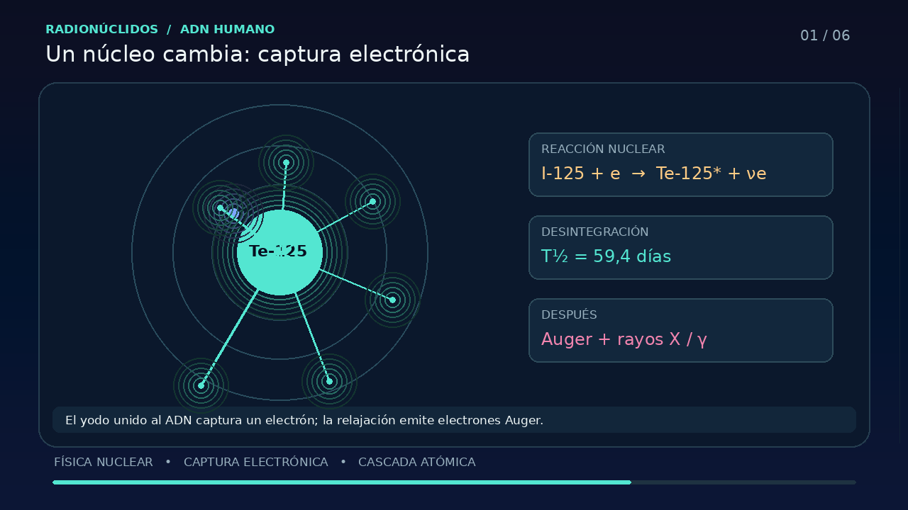
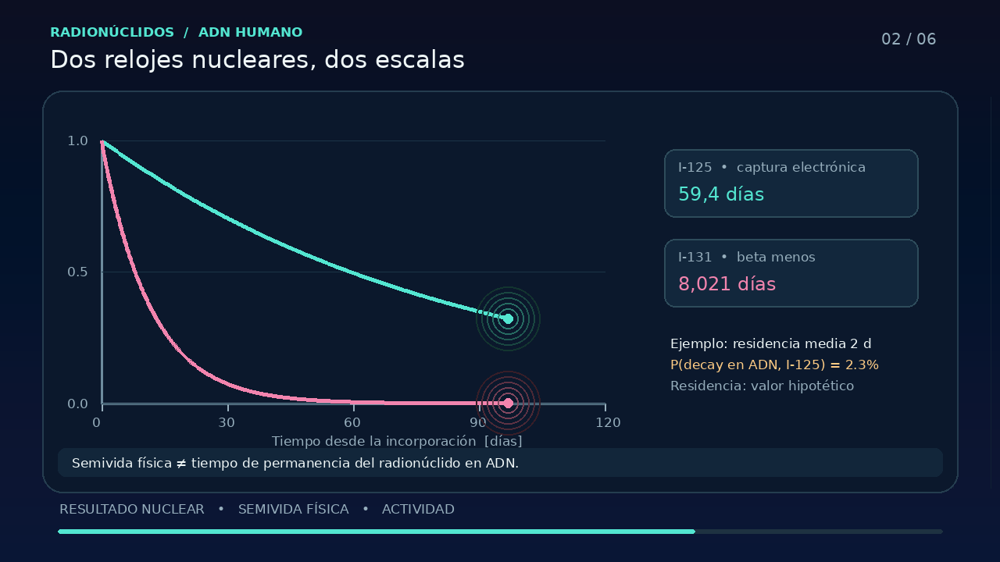
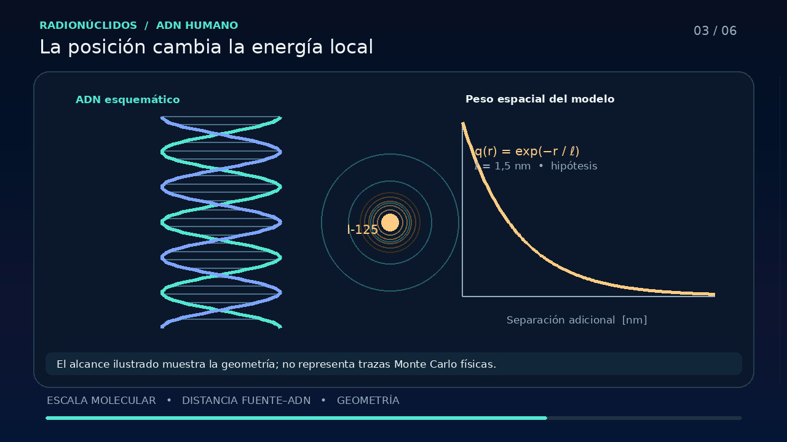
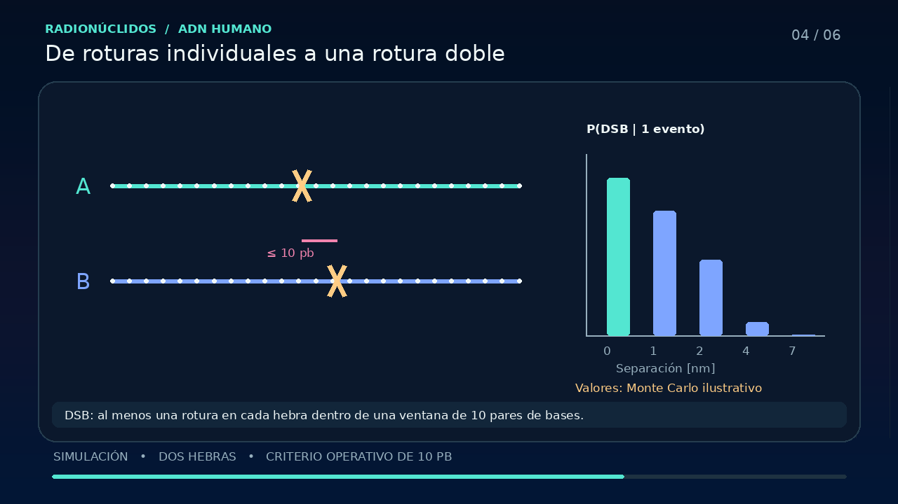
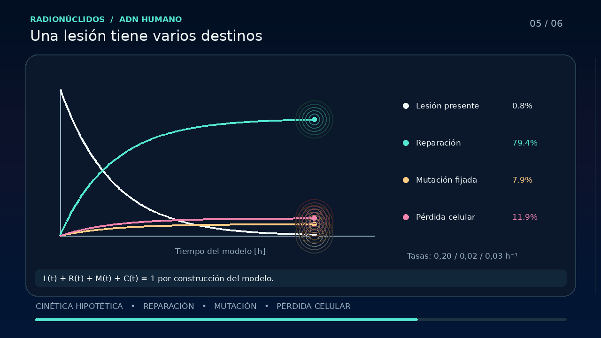
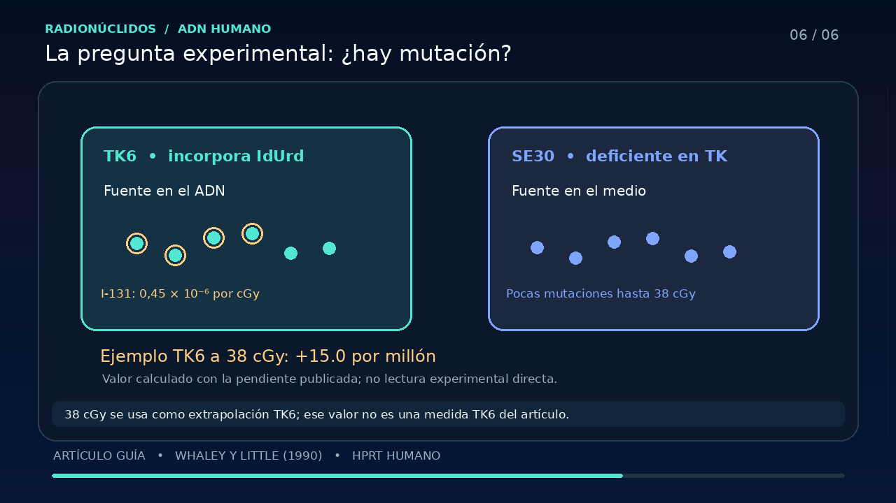

Un núcleo
decae dentro
del ADN.
Del evento nuclear al daño molecular. Una exploración visual sobre cómo la localización de un radionúclido transforma nuestra manera de entender la radiación, la reparación y las mutaciones.
Seis preguntas.
Una misma historia.
Avanza en orden o elige una escena. Cada laboratorio reúne una animación reproducible, controles físicos o estadísticos, ecuaciones, hipótesis, y un vídeo científico original.

Captura y Auger
La captura electrónica de ¹²⁵I forma ¹²⁵Te. La relajación de su nube electrónica puede liberar electrones Auger cerca del lugar del decaimiento.

Semividas y retención
Compara cómo disminuye el número de núcleos de ¹²⁵I y ¹³¹I y qué ocurre si el átomo puede abandonar el ADN antes de decaer.

Distancia y energía
Desplaza un átomo radiactivo alrededor de una doble hélice idealizada y observa un perfil hipotético de lesiones dependientes de la distancia.

Roturas agrupadas
Genera roturas aleatorias en ambas hebras y distingue una rotura simple de una rotura doble según un criterio operativo.

Reparación y destino
Explora cuatro estados que conservan probabilidad: lesión remanente, reparación, fijación de cambio y pérdida del sistema observado.

El experimento HPRT
Conecta las simulaciones con el ensayo HPRT en células humanas TK6 y SE30, sin convertir extrapolaciones en observaciones.
“La actividad nos dice cuántas desintegraciones ocurren. La geometría nos ayuda a preguntar dónde liberan energía.”
¿Es distinto un decaimiento que sucede en el ADN de otro que sucede cerca de él?WHALEY & LITTLE · RADIATION RESEARCH · 1990
Una pregunta experimental, no una metáfora.
El trabajo de Jean M. Whaley y John B. Little comparó los efectos de iododesoxiuridina marcada con ¹²⁵I o ¹³¹I en líneas celulares humanas TK6 y SE30, diferentes en su capacidad de incorporar el análogo al ADN. El estudio registró efectos tóxicos y mutaciones en el locus HPRT; los resultados apoyan la importancia de la localización del emisor.
Lo que el atlas no hace: no simula un genoma completo, no reconstruye trayectorias de electrones con transporte de partículas, no reproduce tasas celulares medidas, ni convierte sus resultados en riesgo de cáncer en personas. Los modelos hipotéticos quedan identificados en cada escena.
Consultar artículo original ↗Más referencias: Martin & Haseltine (1981), ICRP 137 y la guía completa del proyecto.